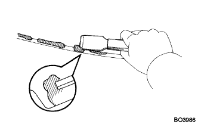
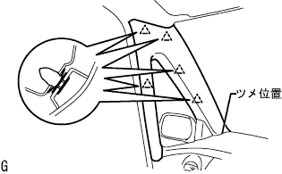
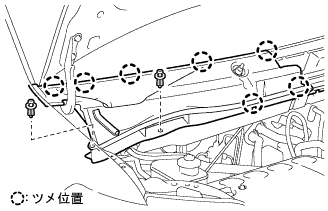

Wind shield glass installation |
| 1. Wind shield glass cleaning |
Take off the damaged stopper.(When the glass is reused)
|  |
Use a scraper to cut off the remaining adhesive and adheriv due.(When the glass is reused)
Clean the glass outer periphery with white gasoline.
| 2. Wind shield glass stopper No.1 installation |
Attach a wind shield glass strippa on the body side.
| 3. Wind shield glass stopper No.2 installation |
Apply a dedicated primer to the wind shield glass stopper No.2 mounting part.
 |
Attach the ceramic cutting on the glass side and the wind shield glass stopper No.2.
| 4. Window glass adhygi dam installation |
Apply a dedicated primer to the adheriv due to the mounting part.
Attach a window shield glass adheriv due to the position in the figure.
| 5. Window glass adhygi dam No.2 mounting |
| 6. Wind shield glass installation |
Body mounting face cleaning
 |
If the adhesive on the vehicle side is remarkably uneven, smooth with a knife.
Work before glass installation
Put the suction rubber on the glass.
Put the glass on the body and set it to a position where the width of the upper part of the glass and the side of the side (uniform between the gap between the body and the edge of the glass end).
Confirm that there is no problem in attaching the outside molding.
Paste the gum tape on the glass and the body panel, and attach the matching mark when installing it with a pen (when new)
Take off the glass.
Apply a dedicated primer to the part where the body surface on the vehicle is exposed (no adhesive remains).
Apply the dedicated primer to the glass adhesion as shown in the figure.

Set the adhesive on the sealant gun.
Apply the adhesive to beads as shown in the figure along the adheriv due to the adherive dam.
Glass installation
Use suction rubber to match the matching mark and attach the glass.
Press the front of the glass lightly to completely adhere.
 |
Fix the protruding and deficiency of the adhesive with a spatula.
| 7. Wind shield outside molding installation |
Before the adhesive is cured, the glass position deciding dot (upper left corner part) and the outside molding assembly standard paint (upper left side corner) are combined to attach a new winds shielded outside moding.
Until the adhesive is cured, hold the outside molding and glass with a protective tape.
Extra adhesive is removed before hardening.
| 8. Water leak inspection and repair |
After adhesion, apply water from the outside of the vehicle to confirm that there is no leak in the room.
In the event of a leak, the three cement black is applied after drying.
| 9. Innariya View Mirror ASSY installation |
| 10. Roof head lining ASSY mounting |
| 11. Installation of viza holder |
Rotate the vicer holder bracket, raise the claws and attach two vicerholders.
| 12. Viser ASSY RH installation |
Attach the viser with two screws.
| 13. Viser ASSY LH installation |
Attach the viser with two screws.
| 14. Assist grip associated (FR LH) |
Attach the assist grip with the claws.
Match the claws and attach two assisted grip cover.
| 15. Map lamp ASSY installation |
Connect the connector.
Attach a pine plamp ASSY with the claws.
Attach two screws.
Attach the lens by adjusting the claws.
| 16. Lon pillar garnish RH installation |
 |
Put the claws at the bottom of the garnish first.
Match all clips and attach the front pillar garnish RH.
| 17. Lon Pillar Garnish LWR RH installation |
 |
Match the claws and attach the front pillar garnish LWR RH.
| 18. Front door opening trim Weather strip RH installation |
 |
Combine the paint mark of the Weather Strip (white, one place) and attach the front door opening trimweather stretup RH.
| 19. Lon pillar garnish LH installation |
|  |
Put the claws at the bottom of the garnish first.
Match all clips and attach the front pillar garnish LH.
| 20. Pillar No.1 Garnish LH installation |
Match the claws and attach the pillar No.1 garnitsu.
| 21. Reardoor opening trimweather strip LH installation |
Combine the paint mark of the Weather Strip (yellow and white, one, one place) and the cut -out portion (arrow part) on the woethstritzy portion on the body side, and attach the rear door opening trimweather strip LH.
| 22. Cowl top ventilator louvor LH installation |
 |
Match the clip and eight claws and attach the cowl top ventilator LH LH.
| 23. Cowl top ventilator louvor RH installation |
|  |
Found two clips and seven claws, and attach the cowl top ventilaarver RH.
| 24. Food toe cowl top seal installation |
 |
Six clips and attach the hood (hud) tsu cowl top seal.
| 25. Lord wiperarm RH installation |
 |
Clean the wire brush of the wire brush.
Clean the Wiper Arm Selation with a circle or crossing.(When re -assembling)
 |
Attach the front wiperarm RH with a nut so that the front wiper blade comes to the position in the figure.
| 26. Lon Wiperem LH installation |
Clean the wire brush of the wire brush.
Clean the Wiper Arm Selation with a circle or crossing.(When re -assembling)
 |
Attach the front wiperarm LH with a nut so that the front wiper blade comes to the position in the figure.
The front wiper is activated while applying water or washer solution on the glass to confirm that it does not interfere with the blade dispatch status and the body.
| 27. Wind shield wiper arm cover installation |